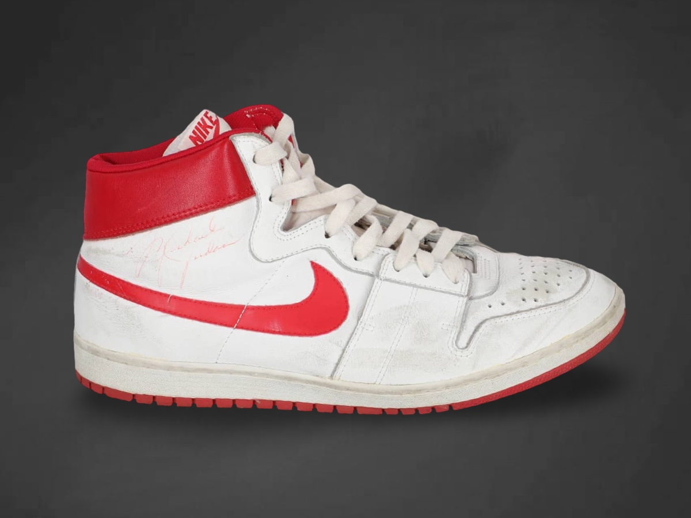
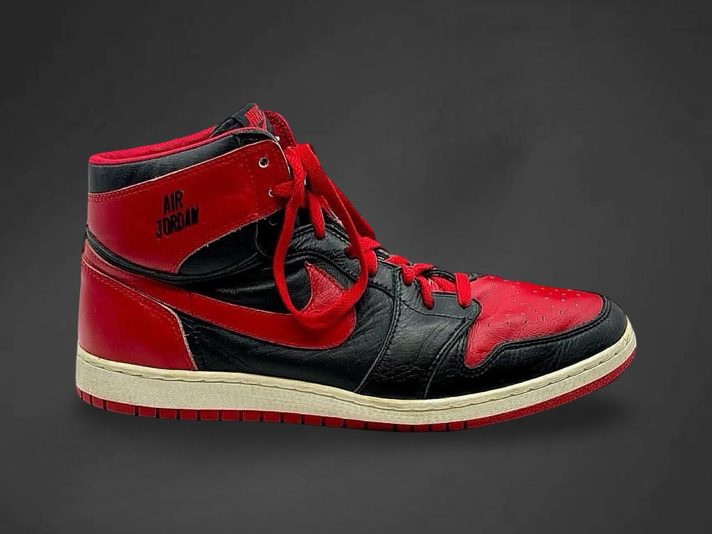
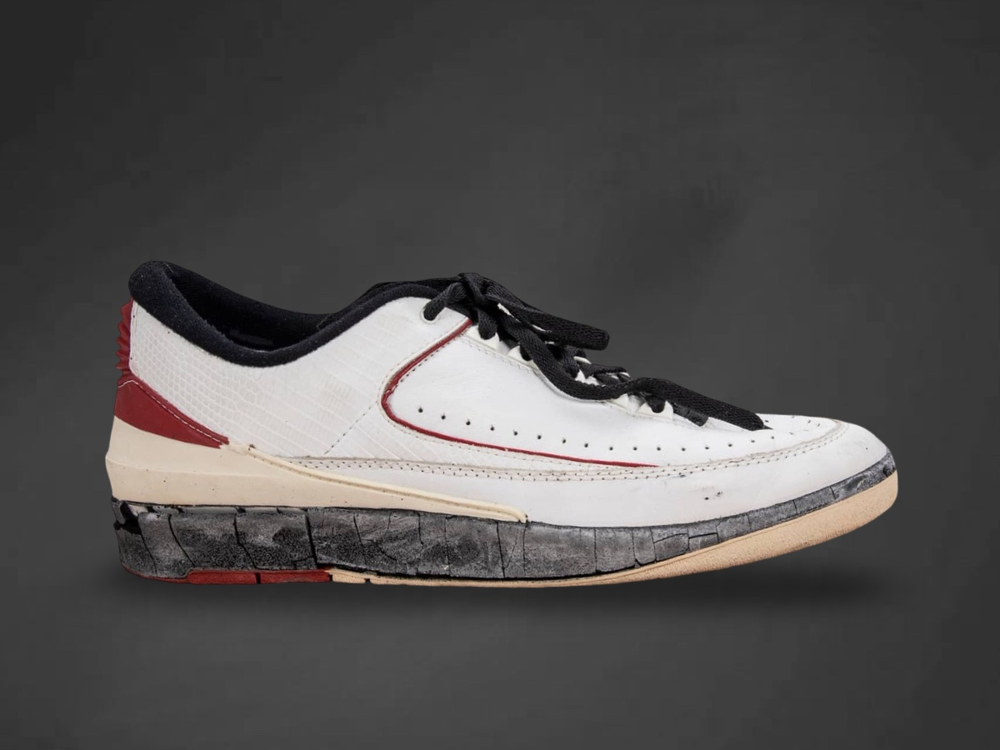
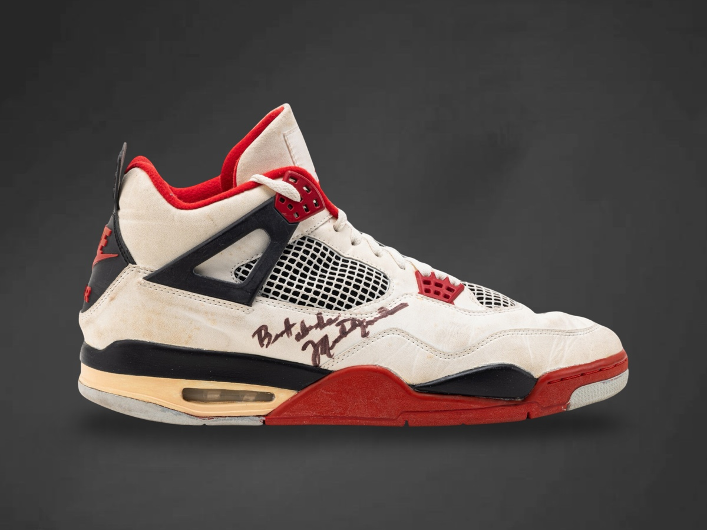
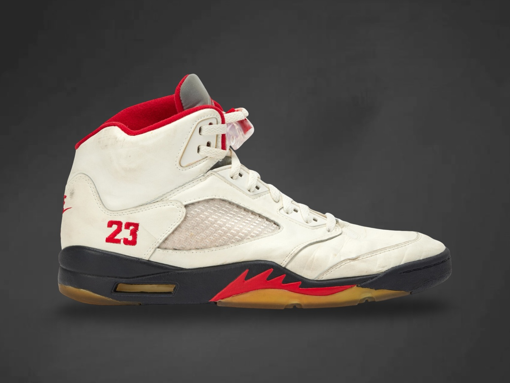
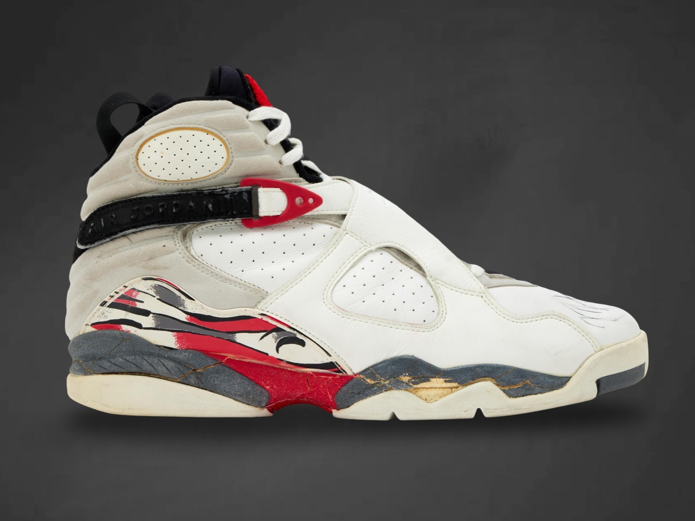
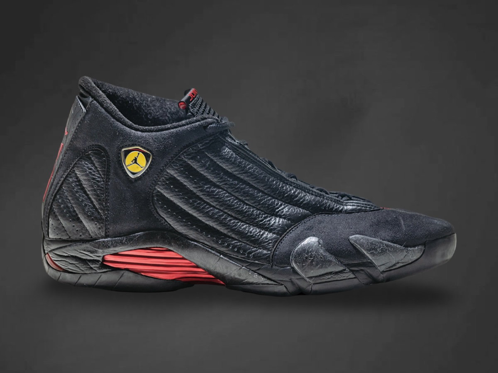
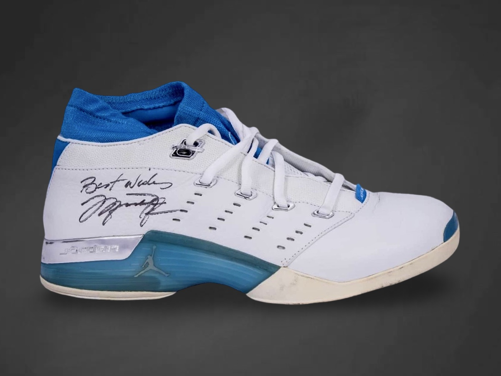
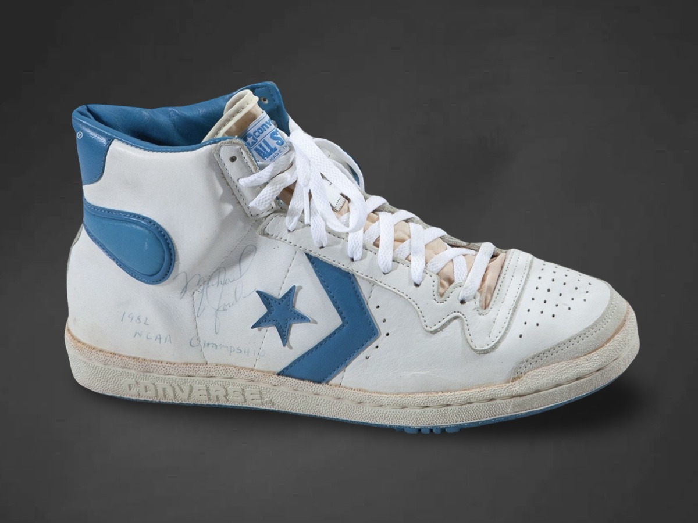

Sneaker Index
A chronological record of Michael Jordan’s game-worn footwear, organized by model and supported by documented public examples, photo matches, and classification through verified coding.
The Sneaker Index is an ongoing archival record and will be expanded as additional examples are documented and verified.
Authentication Classes
Authentication within the archive is defined by two classifications.
Photo-Matched identifies pairs confirmed through direct visual correspondence to game imagery, supported by observable wear and pair-specific characteristics.
Verified by Code & Research identifies pairs authenticated through production coding, model chronology, and supporting research, confirming manufacture for Michael Jordan when a direct photo-match is not established.








